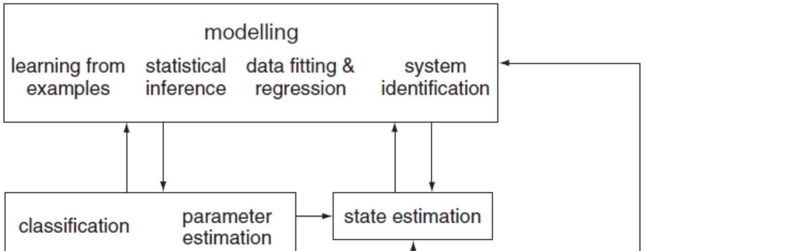
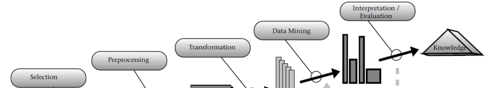
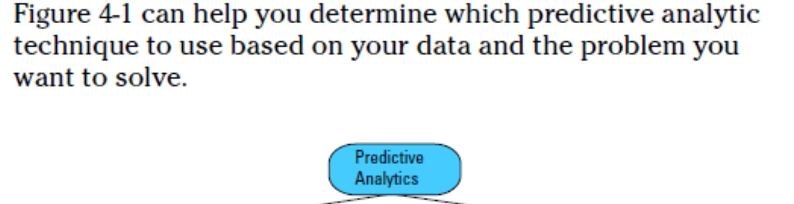

Business opportunities from the analysis of customer data
DATA SCIENCE SERVICES
Business opportunities from the analysis of customer data
Data science in the enterprise
Fortune Walla
7/31/2014
This document discusses the emergence of data science in the business sector. There are 3 main parts INTRODUCTION: Overview of the field of data science. ANALYSIS TECHNIQUES & TOOLS: Tools used commercially. CONCLUSION: How can companies leverage data science in their business strategy & development.
1. INTRODUCTION
1.1 Data as a commodity
The whole notion of data and the use of data in organizations have changed. Especially for smaller organizations & those that are not software companies.
The paradigm change that has occurred is that
Data is now a commodity.
Value creation from data.
Creating new data products from existing data.
“A data application acquires its value from the data itself, and creates more data as a result. It’s not just an application with data; it’s a data product. Data science enables the creation of data products.” 1
So far all organizations were collecting data & analyzing it to solve specific business/research problems.
Here often only a part of the data was evaluated for specific business or research purposes.
Also people did not think about insights from the rest of the related but uncombined data?
1.2 What has caused this shift in the value of data?
My analogy would be DSP & IC revolution
Events after Sep-11
S.M.A.C -> Social Mobile Analytics Cloud
This is where most companies missing the paradigm & the opportunities. Most companies especially in the industrial & technical sphere feel that they are not a data company but a hardware, embedded, biomedical, engineering instrumentation company.
1.3 Data Science: a brave new world 2
“Whether it is called data mining, predictive analytics, sense making, or knowledge discovery, the rapid development and increased availability of advanced computational techniques have changed our world in many ways.
There are very few, if any, electronic transactions that are not monitored, collected, aggregated, analyzed, and modeled. Data are collected about everything, from our financial activities to our shopping habits. Even casino gambling is being analyzed and modeled in an effort to characterize, predict, or modify behavior.”
1.3.1 Relation between the subjects 3

1.3.2 Statistical pattern recognition 4
Statistical pattern recognition is a term used to cover all stages of an investigation from problem formulation and data collection through to discrimination and classification, assessment of results and interpretation.
It developed significantly in the 1960s. It was very much an interdisciplinary subject. Approaches for analyzing such data include those for signal processing, filtering, data summarization, dimension reduction, variable selection, regression and classification.
The large number of applications ranging from the classical ones such as automatic character recognition and medical diagnosis to the more recent ones in data mining (such as credit scoring, consumer sales analysis and credit card transaction analysis) have attracted considerable research effort.
Within these areas significant progress has been made. These developments include, for example, kernel-based methods (including support vector machines) and Bayesian computational methods.
The term machine learning describes the study of machines that can adapt to their environment and learn from example. The machine learning emphasis is perhaps more on computationally intensive methods and less on a statistical approach.
Two complementary approaches to discrimination
A decision theory approach based on calculation of probability density functions
The use of Bayes theorem and a discriminant function approach. (Discriminant function analysis is useful in determining whether a set of variables is effective in predicting category membership. 5)
Two approaches to classification
Both supervised (using class information to design a classifier – i.e. discrimination)
Unsupervised (allocating to groups without class information – i.e. clustering).
A practical example of pattern recognition that is familiar to many people is classifying email messages (as spam/not spam) based upon message header, content and sender.
1.3.3 Knowledge Discovery in Databases (KDD)
From Data to Knowledge:6

In short, KDA is a sequence of six steps, one of which is the data mining step concerned with building the data model. …from understanding of data and preprocessing to deployment of the results.
Overview of KDD 7
Historically, the notion of finding useful patterns in data has been given a variety of names, including data mining, knowledge extraction, information discovery, information harvesting, data archaeology, and data pattern processing.
The phrase knowledge discovery in databases was coined at the first KDD workshop in 1989 (Piatetsky-Shapiro 1991) to emphasize that knowledge is the end product of a data-driven discovery.
The interdisciplinary nature of KDD has evolved, and continues to evolve, from the intersection of research fields such as machine learning, pattern recognition, databases, and statistics.
Data mining is the application of specific algorithms for extracting patterns from data. The datamining component of KDD currently relies heavily on known techniques from machine learning, pattern recognition, and statistics to find patterns from data in the data-mining step of the KDD process.
The term data mining has mostly been used by statisticians, data analysts, and the management information systems (MIS) communities. It has also gained popularity in the database field.
Blind application of data-mining methods (rightly criticized as data dredging in the statistical literature) can be a dangerous activity, easily leading to the discovery of meaningless and invalid patterns.
A natural question is: How is KDD different from pattern recognition or machine learning (and related fields)?
The answer is that these fields provide some of the data-mining methods that are used in the datamining step of the KDD process, including how the data are stored and accessed, how algorithms can be scaled to massive data sets ultimate and still run efficiently, how results can be interpreted and visualized, and how the overall man-machine interaction can usefully be modeled and supported.
The KDD process can be viewed as a multidisciplinary activity that encompasses techniques beyond the scope of any one particular discipline such as machine learning. Thus, for example, neural networks, although a powerful modeling tool, are relatively difficult to understand compared to decision trees.
KDD also emphasizes scaling and robustness properties of modeling algorithms for large noisy data sets.
Knowledge discovery from data is fundamentally a statistical endeavor. Statistics provides a language and framework for quantifying the uncertainty that results when one tries to infer general patterns from a particular sample of an overall population.
The term data mining has had negative connotations in statistics since the1960s when computerbased data analysis techniques were first introduced. The concern arose because if one searches long enough in any data set (even randomly generated data), one can find patterns that appear to be statistically significant but, in fact, are not.
KDD can also be viewed as encompassing a broader view of modeling than statistics. KDD aims to provide tools to automate (to the degree possible) the entire process of data analysis and the statistician’s “art” of hypothesis selection.
Especially database techniques for gaining efficient data access, grouping and ordering operations when accessing data, and optimizing queries constitute the basics for scaling algorithms to larger data sets.
Most data-mining algorithms from statistics, pattern recognition, and machine learning assume data are in the main memory and pay no attention to how the algorithm breaks down if only limited views of the data are possible.
1.3.4 Data mining 8
The aim of data mining is to make sense of large amounts of mostly unsupervised data, in some domain.
Businesses are the largest group of DM users, since they routinely collect massive amounts of data and have a vested interest in making sense of the data. Their goal is to make their companies more competitive and profitable.
In the above definition, the first key term is to make sense, which has different meanings depending on the user’s experience. Probably the most important requirement is that the discovered new knowledge needs to be understandable to data owners who want to use it to some advantage. The most convenient outcome by far would be knowledge or a model of the data that can be described in easy-to-understand terms, say, via production rules such as:
IF abnormality (obstruction) in coronary arteries
THEN coronary artery disease
In the example, the input data may be images of the heart and accompanying arteries. If the images are diagnosed by cardiologists as being normal or abnormal (with obstructed arteries), then such data are known as learning/training data. Some DM techniques generate models of the data in terms of production rules, and cardiologists may then analyze these and either accept or reject them (in case the rules do not agree with their domain knowledge).
Note, however, that cardiologists may not have used, or even known, some of the rules generated by DM techniques, even if the rules are correct (as determined by cardiologists after deeper examination), or as shown by a data miner to be performing well on new unseen data, known as test data.
We then come to the second requirement; the generated model needs to be valid. If, in our example, all the generated rules were already known to cardiologists, these rules would be considered trivial and of no interest, although the generation of the already-known rules validates the generated models and the DM methodology. However, in the latter case, the project results would be considered a failure by the cardiologists (data owners).
Thus, we come to the third requirement associated with making sense, namely, that the discovered knowledge must be novel. Let us suppose that the new knowledge about how to diagnose a patient had been discovered not in terms of production rules but by a different type of data model, say, a neural network. In this case, the new knowledge may or may not be acceptable to the cardiologists, since a neural network is a “black box” model that, in general, cannot be understood by humans. A trained neural network, however, might still be acceptable if it were proven to work well on hundreds of new cases. To illustrate the latter case, assume that the purpose of DM was to automate the analysis (prescreening) of heart images before a cardiologist would see a patient; in that case, a neural network model would be acceptable. We thus associate with the term making sense the fourth requirement, by requesting that the discovered knowledge be useful. This usefulness must hold true regardless of the type of model used (in our example, it was rules vs. neural networks).
The other key term in the definition is large amounts of data. DM is not about analyzing small data sets that can be easily dealt with using many standard techniques, or even manually. To give the reader a sense of the scale of data being collected that are good candidates for DM, let us look at the following examples:
AT&T handles over 300 million calls daily to serve about 100 million customers and stores the information in a multiterabyte database.
Wal-Mart, in all its stores taken together handles about 21 million transactions a day, and stores the information in a database of about a dozen terabytes.
NASA generates several gigabytes of data per hour through its Earth Observing System.
Oil companies like Mobil Oil store hundreds of terabytes of data about different aspects of oil exploration.
The Sloan Digital Sky Survey project will collect observational data of about 40 terabytes.
Modern biology creates, in projects like the human genome and proteome, data measured in terabytes and petabytes. Although no data are publiclyd available,
Homeland Security in the U.S.A. is collecting petabytes of data on its own and other countries’ citizens.
It is clear that none of the above databases can be analyzed by humans or even by the best algorithms (in terms of speed and memory requirements); these large amounts of data necessarily require the use of DM techniques to reduce the data in terms of both quantity and dimensionality.
The third key term in the above definition is mostly unsupervised data. It is much easier, and less expensive, to collect unsupervised data than supervised data. The reason is that with supervised data we must have known inputs corresponding to known outputs, as determined by domain experts. In our example, “input” images correspond to the “output” diagnosis of coronary artery disease (determined by cardiologists – a costly and error-prone process).
So what can be done if only unsupervised data are collected? To deal with the problem, one of the most difficult in DM, we need to use algorithms that are able to find “natural” groupings/clusters, relationships, and associations in the data. For example, if clusters can be found, they can possibly be labeled by domain experts. If we are able to do both, our unsupervised data becomes supervised, resulting in a much easier problem to deal with. Finding natural groupings or relationships in the data, however, is very difficult and remains an open research problem. Clustering is exacerbated by the fact that most clustering algorithms require the user a priori to specify (guess) the number of clusters in the data.
Similarly, the association-rule mining algorithms require the user to specify parameters that allow the generation of an appropriate number of high-quality associations. Another scenario exists when the available data are semisupervised, meaning that there are a few known training data pairs along with thousands of unsupervised data points. In our cardiology example, this situation would correspond to having thousands of images without diagnosis and only a few images that have been diagnosed. The question then becomes: Can these few data points help in the process of making sense of the entire data set?
Fortunately, there exist techniques of semi-supervised learning which take advantage of these few training data points.
By far the easiest scenario in DM is when all data points are fully supervised, since the majority of existing DM techniques are quite good at dealing with such data, with the possible exception of their scalability. A DM algorithm that works well on both small and large data is called scalable, but, unfortunately, few are.
The final key term in the definition is domain. The success of DM projects depends heavily on access to domain knowledge, and thus it is crucial for data miners to work very closely with domain experts/data owners. Discovering new knowledge from data is a process that is highly interactive (with domain experts) and iterative. We cannot simply take a successful DM system, built for some domain, and apply it to another domain and expect good results.
Another hundreds of available DM algorithms, such as clustering or machine learning, only small numbers of them are scalable to large data.
How does Data Mining Differ from Other Approaches?
Data mining came into existence in response to technological advances in many diverse disciplines. For instance, over the years computer engineering contributed significantly to the development of more powerful computers in terms of both speed and memory; computer science and mathematics continued to develop more and more efficient database architectures and search algorithms; and the combination of these disciplines helped to develop the World Wide Web.
All the data in the world are of no value without mechanisms to efficiently and effectively extract information and knowledge from them. Early pioneers such as U. Fayyad, H. Mannila, G. PiatetskyShapiro, G. Djorgovski, W. Frawley, P. Smith, and others recognized this urgent need, and the data mining field was born.
Data mining is not just an “umbrella” term coined for the purpose of making sense of data. The major distinguishing characteristic of DM is that it is data driven, as opposed to other methods that are often model driven.
In statistics, researchers frequently deal with the problem of finding the smallest data size that gives sufficiently confident estimates. In DM, we deal with the opposite problem, namely, data size is large and we are interested in building a data model that is small (not too complex) but still describes the data well.
Finding a good model of the data, which at the same time is easy to understand, is at the heart of DM. We need to keep in mind, however, that none of the generated models will be complete (using all the relevant variables/attributes of the data), and that almost always we will look for a compromise between model completeness and model. This approach is in accordance with Occam’s razor:
simpler models are preferred over more complex ones.
The users should understand that the application of even a very good tool to one’s data will most often not result in the generation of valuable knowledge for the data owner after simply clicking “run”.
“Since its genesis in the mid 1990s, data mining has been thought of as encompassing two tasks:
using data to test some pre-determined hypothesis, or
using data to determine the hypothesis in the first place.
The full automation of both these tasks – hypothesising and then testing – leads to what is known as automated discovery or machine learning.” 9
1.3.5 Machine learning:
The notion of performance improving with experience is central to most, if not all, forms of machine learning. We will use the following general definition:
Machine learning is the systematic study of algorithms and systems that improve their knowledge or performance with experience. 10
“The goal of machine learning is to teach machines to carry out tasks by providing them with a couple of examples (how to do or not do a task) & let an algorithm come up with the best rule set. The pairs would be your training data, and the resulting rule set (also called model) could then be applied to future data that we have not yet seen.” 11
“It’s only over the past decade or so that the inherent multi-disciplinarity of machine learning has been recognized. It merges ideas from neuroscience and biology, statistics, mathematics, and physics to make machines learn. …..
Another thing that has driven the change in direction in machine learning research is data mining which looks at the extraction of useful information from massive data sets, and which requires efficient algorithms, putting more of the emphasis back onto computer science” 12
1.3.6 Predictive analytics 13
Data mining is the discovery of hidden patterns of data through machine learning — and sophisticated algorithms are the mining tools.
Predictive analytics is the process of refining that data resource, using business knowledge to extract hidden value from those newly discovered patterns.
Data mining + business knowledge = predictive analytics => value
Two broad, identifiable branches to predictive analytics 14
■ Decision analytics has to do with classifying (mainly) people into segments of interest to the analyst. This branch of analytics depends heavily on multivariate statistical analyses, such as cluster analysis and multidimensional scaling. Decision analytics also uses a method called logistic regression to deal with the special problems created by dependent variables that are binary or nominal, such as buys versus doesn’t buy and survives versus doesn’t survive.
■ Predictive analytics deals with forecasting, and often employs techniques that have been used for decades. Exponential smoothing (also termed exponentially weighted moving averages or EMWA) is one such technique, as is autoregression. Box-Jenkins analysis dates to the middle of the twentieth century and comprises the moving average and regression approaches to forecasting.
Of course, these two broad branches aren’t mutually exclusive. There’s not a clear dividing line between situations in which you would use one and not the other, although that’s often the case. But you can certainly find yourself asking questions such as these:
I’ve classified my current database of prospects into likely buyers and likely non-buyers, according to demographics such as age, income, ZIP Code, and education level. Can I create a credible quarterly forecast of purchase volume if I apply the same classification criteria to a data set consisting of past prospects?
I’ve extracted two principal components from a set of variables that measure the weekly performance of several product lines over the past two years. How do I forecast the performance of the products for the next quarter using the principal components as the outcome measures?
So, there can be overlap between decision analytics and predictive analytics. But not always— sometimes all you want to do is forecast, say, product revenue without first doing any classification or multivariate analysis. But at times you believe there’s a need to forecast the behavior of segments or of components that aren’t directly measurable. It’s in that sort of situation that the two broad branches, decision and predictive analytics, nourish one another.
Predictive analytic techniques 15

Predictive analytics is the process of using a set of sophisticated analytic tools to develop models and estimations of what the environment will do in the future. In addition to the preceding definition of predictive analytics, Gartner Research Director Gareth Herschel says this: “Predictive analytics helps connect data to effective action by drawing reliable conclusions about current conditions and future events.”
Predictive analytics is data-driven16
Learning how to predict from data is sometimes called machine learning—but, it turns out, this is mostly an academic term you find used within research labs, conference papers, and university courses .In commercial, industrial, and government applications—in the real-world usage of machine learning to predict—it’s called something else:
Predictive analytics (PA)— Technology that learns from experience (data) to predict the future behavior of individuals in order to drive better decisions.
Built upon computer science and statistics and bolstered by devoted conferences and university degree programs, PA has emerged as its own discipline. But, beyond a field of science, PA is a movement that exerts a forceful impact. Millions of decisions a day determine whom to call, mail, approve, test, diagnose, warn, investigate, incarcerate, set up on a date, and medicate. PA is the means to drive per-person decisions empirically, as guided by data. By answering this mountain of smaller questions, PA may in fact answer the biggest question of all:
How can we improve the effectiveness of all these massive functions across government, healthcare, business, nonprofit, and law enforcement work?
In this way, PA is a completely different animal from forecasting. Forecasting makes aggregate predictions on a macroscopic level.
Whereas forecasting estimates the total number of ice cream cones to be purchased next month in Nebraska, predictive technology tells you which individual Nebraskans are most likely to be seen with cone in hand.
PA leads within the growing trend to make decisions more “data driven,” relying less on one’s “gut” and more on hard, empirical evidence.
Enter this fact-based domain and you’ll be attacked by buzzwords, including analytics, big data, business intelligence, and data science. While PA fits underneath each of these umbrellas, these evocative terms refer more to the culture and general skill sets of technologists who do an assortment of creative, innovative things with data, rather than alluding to any specific technology or method.
These areas are broad; in some cases, they refer simply to standard Excel reports—that is, to things that are important and require a great deal of craft, but may not rely on science or sophisticated math. And so they are more subjectively defined.
Another term, data mining, is often used as a synonym for PA, but, as an evocative metaphor depicting “digging around” through data in one fashion or another, it is
Managing risk is a critical aspect of Decision Management Systems. 17
The first real commercial use of predictive analytics was to manage credit risk by predicting the likelihood that a consumer would miss a payment in the immediate future.
Suddenly there is all this data about who uses what power when. Using predictive analytics to find trends, segments with specific behaviors, and to predict how people might react to specific price changes will become the norm.
The process of building mathematical optimization models has similarities with its predictive analytics counterpart, but there are a few major differences worth highlighting to avoid confusion:
■ Although predictive models are generated by applying an algorithm to a data set, an optimization model is formulated by hand to represent a business problem by defining the decision variables, the objective, and the constraints.
■ Although the scope and input to a predictive model is often relatively small (such as information about a customer), the scope of an optimization model is usually a complex transaction or a set of transactions.
■ Predictive analytic models generally require access to large amounts of historical data that can be used to train the model. Optimization models can be run against historical data but do not require it.
■ Although invoking a predictive model in a Decision Service is relatively fast and simple—it simply involves evaluating a formula or interpreting a decision tree—solving an optimization model can consume significant time and memory, depending on the complexity of the model and size of the data. The optimization model must search a large set of possible actions to determine the one that best fits the constraints and goals.
Optimization is well established in supply chain problem domains where it is often used to define which products to make on which machines in a factory to maximize the value of products produced given restricted access to the various machines needed to make the products.
Similarly, your airplane seat, rental car, and hotel room are all likely to be priced using optimization technology.
Statistical hypothesis testing 18
A preliminary study may suggest that customers in the Northeast have a churn rate of 22.5%, whereas the nationwide average churn rate is only 15%. This may be just a chance fluctuation since the churn rate is not constant; it varies over regions and over time, so differences are to be expected. But the Northeast rate is one and a half times the U.S. average, which seems unusually high.
What is the chance that this pattern or phenomenon is due to random variation? Statistical hypothesis testing is used to answer such questions.
Data science 19
The statistician William S. Cleveland defined data science as an interdisciplinary field larger than statistics itself.
We define data science as managing the process that can transform hypotheses and data into actionable predictions.
Typical predictive analytic goals include predicting who will win an election, what products will sell well together, which loans will default, or which advertisements will be clicked on.
The data scientist is responsible for acquiring the data, managing the data, choosing the modeling technique, writing the code, and verifying the results.
Data science and its relationship to Big Data and data-driven decision making 20
Companies have realized they need to hire data scientists, academic institutions are scrambling to put together data-science programs, and publications are touting data science as a hot—even ‘‘sexy’’—career choice. However, there is confusion about what exactly data science is, and this confusion could lead to disillusionment as the concept diffuses into meaningless buzz.
We can debate the boundaries of the field in an academic setting, but in order for data science to serve business effectively, it is important
- to understand its relationships to these other important and closely related concepts,
- to begin to understand what are the fundamental principles underlying data science.
At a high level, data science is a set of fundamental principles that support and guide the principled extraction of information and knowledge from data.
Data science is viewed as the connective tissue between data-processing technologies (including those for ‘‘big data’’) and data-driven decision making.
Probably the broadest business applications are in marketing for tasks such as targeted marketing, online advertising, and recommendations for cross-selling. Data science also is applied for general customer relationship management to analyze customer behavior in order to manage attrition and maximize expected customer value. The finance industry uses data science for credit scoring and trading and in operations via fraud detection and workforce management
A data-science perspective provides practitioners with structure and principles, which give the data scientist a framework to systematically treat problems of extracting useful knowledge from data.
Backed by the trillions of bytes’ worth of shopper history that is stored in Wal-Mart’s data warehouse, she felt that the company could ‘‘start predicting what’s going to happen, when Hurricane Charley struck, several weeks earlier, instead of waiting for it to happen,’’ as she put it.
The New York Times reported that: ‘‘.the experts mined the data and found that the stores would indeed need certain products— and not just the usual flashlights. ‘We didn’t know in the past that strawberry Pop-Tarts increase in sales, like seven times their normal sales rate, ahead of a hurricane,’ Ms. Dillman said in a recent interview.’ And the pre-hurricane top-selling item was beer.’’’2
How should MegaTelCo decide on the set of customers to target to best reduce churn for a particular incentive budget?
One standard deviation higher on the DDD scale is associated with a 4–6% increase in productivity. DDD also is correlated with higher return on assets, return on equity, asset utilization, and market value, and the relationship seems to be causal.
Our two example case studies illustrate two different sorts of decisions: (1) decisions for which ‘‘discoveries’’ need to be made within data, and (2) decisions that repeat, especially at massive scale, and so decision making can benefit from even small increases in accuracy based on data analysis. The Wal-Mart example above illustrates a type-1 problem. Linda Dillman would like to discover knowledge that will help Wal-Mart prepare for Hurricane Frances’s imminent arrival. Our churn example illustrates a type-2 DDD problem.
A large telecommunications company may have hundreds of millions of customers, each a candidate for defection. Tens of millions of customers have contracts expiring each month, so each one of them has an increased likelihood of defection in the near future. If we can improve our ability to estimate, for a given customer, how profitable it would be for us to focus on her, we can potentially reap large benefits by applying this ability to the millions of customers in the population. This same logic applies to many of the areas where we have seen the most intense application of data science and data mining:
Direct marketing, online advertising, credit scoring, financial trading, help-desk management, fraud detection, search ranking, product recommendation, and so on.
The use of big data technologies correlates with significant additional productivity growth. Specifically, one standard deviation higher utilization of big data technologies is associated with 1–3% higher productivity than the average firm; one standard deviation lower in terms of big data utilization is associated with 1–3% lower productivity. This leads to potentially very large productivity differences between the firms at the extremes.
Similarly, we see some companies already applying Big Data 2.0. Amazon again is a company at the forefront, providing data-driven recommendations from massive data. There are other examples as well. Online advertisers must process extremely large volumes of data (billions of ad impressions per day is not unusual) and maintain a very high throughput (real-time bidding systems make decisions in tens of milliseconds).
Managers and line employees in other functional areas will only get the best from the company’s datascience resources if they have some basic understanding of the fundamental principles.
Facebook, Twitter, Yahoo, Google, Amazon along with many other ‘‘Digital 100’’ companies,5 have high valuations due primarily to data assets they are committed to capturing or creating.
Fundamentals concepts of data science:
Extracting useful knowledge from data to solve business problems can be treated systematically by following a process with reasonably well-defined stages. The Cross-Industry Standard Process for Data Mining (CRISP-DM)
Evaluating data-science results requires careful consideration of the context in which they will be used: For our churn-management example, how exactly are we going to use the patterns that are extracted from historical data? More generally, does the pattern lead to better decisions than some reasonable alternative?
The relationship between the business problem and the analytics solution often can be decomposed into tractable subproblems via the framework of analyzing expected value. We have many specific tools for estimating probabilities and values from data. For our churn example, should the value of the customer be taken into account in addition to the likelihood of leaving?
Information technology can be used to find informative data items from within a large body of data: In our churn example, a quantity of interest is the likelihood that a particular customer will leave after her contract expires. Before the contract expires, this would be an unknown quantity. However, there may be known data items (usage, service history, how many friends have canceled contracts) that correlate with our quantity of interest. This fundamental concept underlies a vast number of techniques for statistical analysis, predictive modeling, and other data mining.
Entities that are similar with respect to known features or attributes often are similar with respect to unknown features or attributes.
If you look too hard at a set of data, you will find something—but it might not generalize beyond the data you’re observing. This is referred to as ‘‘overfitting’’ a dataset.
To draw causal conclusions, one must pay very close attention to the presence of confounding factors, possibly unseen ones.
For example, it is common to see job advertisements mentioning data-mining techniques (random forests, support vector machines), specific application areas (recommendation systems, ad placement optimization), alongside popular software tools for processing big data (SQL, Hadoop, MongoDB).
1.4 Where is the concept of data science heading?
“Google is not really a search company. It’s a machine-learning company,” says Matthew Zeiler, the CEO of visual search startup Clarifai, who worked on Google Brain during a pair of internships. He says that all of Google’s most-important projects—autonomous cars, advertising, Google Maps—stand to gain from this type of research. “Everything in the company is really driven by machine learning.” 21
Machine learning applications for data center efficiency optimization 22
“The sheer number of possible equipment combinations and their setpoint values makes it difficult to determine where the optimal efficiency lies,” Gao writes in the white paper on his initiative. “In a live DC, it is possible to meet the target setpoints through many possible combinations of hardware (mechanical and electrical equipment) and software (control strategies and setpoints). Testing each and every feature combination to maximize efficiency would be unfeasible given time constraints, frequent fluctuations in the IT load and weather conditions, as well as the need to maintain a stable DC environment.”
“Google’s Search engine has tried to approximate human intelligence by rapidly analyzing enormous amounts of data, but people like LeCun (from Facebook) aim to build massive “neutral networks” that actually mimic the way the brain works.”[^23]
“Vern Brownell, D-Wave’s CEO, talks about the company’s ongoing efforts to prove the potential of its hardware and its plans for the future … third category is in the broad area of machine learning, which we think is one of the most exciting things going on in computer science today.”23
“In 2000, physicist Alexei Kitaev (then at Microsoft Research) proposed that a mysterious quasiparticle known as a Majorana could be used in quantum information processing, showing that Majoranas located at opposite ends of a quantum wire could effectively create a topologically protected qubit. Five years later, Das Sarma – along with Freedman and Chetan Nayak, Station Q’s other main leader – co-authored a paper suggesting an experimental proposal for creating a topologically protected qubit using something called the “fractional quantum Hall” system (twodimensional electron gas in a strong magnetic field) along with a similar quasiparticle. These important discoveries pointed to a promising new direction for protecting qubits, and therefore getting them to behave. After all, qubits working together in harmony is fundamental to getting them to compute.” 24
“Viv is not the only company competing for a share of those billions. The field of artificial intelligence has become the scene of a frantic corporate arms race, with Internet giants snapping up AI startups and talent. …Their goal is to build a new generation of AI that can process massive troves of data to predict and fulfill our desires.” 25
Google 3D phone/Amazon 3D phone. IBM Neural chip.
1.5 Some of the current trends.
July 2009 - IBM to buy SPSS(statistics software vendor) for $1.2 Billion to gain analytics
Mar 2011 - Via Science Acquires Dataspora, a pioneer in predictive analytics to leverage proprietary machine learning platform, REFS™, beyond healthcare and financial services.
Oct 2013 - SAP buys KXEN(statistics software vendor) to further predictive analytics
Feb 2014 – Workday acquires HR predictive analytics company Identified
Mar 2014 - Dell acquires StatSoft (statistics software vendor) and the list of predictive platform vendors gets even shorter… by Simon Arkell, CEO, Predixion Software
Jun 2014 - Nokia’s HERE mapping service continued its buying spree with today’s acquisition of real-time predictive analytics firm Medio Systems
Jul 2014 - Twitter acquires image search firm Madbits (uses deep learning techniques to understand the content of an image)
1.6 What would typical application areas of data science be?
Microsoft Machine Learning software
OSISoft is working with Carnegie Mellon University on real time fault detection and the diagnosis of energy output variations across campus buildings. Machine learning is helping to mitigate issues in real time and to predictably optimize energy usage and cost.
GitHub: sebastianbk/BreastCancerNeuralNetwork Implementation of a Neural Network in .NET using the Diagnostic Wisconsin Breast Cancer Database. After completing the example with the Breast Cancer data set by coding it myself, I thought of using Azure Machine Learning to do the same job.
Kaggle, the leading platform for predictive modeling competitions:
UPenn and Mayo Clinic’s Seizure Detection Challenge: Detect seizures in intracranial EEG recordings
The Heritage Provider Network (HPN): The goal of the prize is to develop a predictive algorithm that can identify patients who will be admitted to a hospital within the next year, using historical claims data.
Dunnhumby, a U.K. firm that does analytics for supermarket chains, was looking to build a model to predict when supermarket shoppers will next visit the store and how much they will spend.
BoehringerIngelheimBioSciences: Predict a biological response of molecules from their chemical properties as optimally as this data allows, relate molecular information, to an actual biological response.
Jetpac is an online travel magazine startup: Given anonymized information on thousands of photo albums, predict whether a human evaluator would mark them as ‘good’.
AllState Insurance: The goal of the Claim Prediction Challenge was to predict bodily injury liability, based solely on the characteristics of the insured vehicle.
IBM Life Sciences
Ricardo Machado, (IBM, Brazil) published many papers on neural networks and a predictive expert system named Next. The power of this system stemmed from its ability to use “knowledge graphs” obtained from interviews with medical experts to form the basis of a model capable of altering these graphs when presented with data, thus transforming them into an artificial neural network. Next was successfully used to diagnose and classify kidney diseases.
Beatriz Leao (IBM, Brazil), developed a system called HYCONES, which also combined symbolic knowledge and neural networks. It was able to successfully detect and classify congenital heart diseases. The results of the work were published in M.D. Computing in 1994.
Stanford Machine Learning Projects (CS229)
Characterizing and diagnosing hypertrophic cardiomyopathy from ECG data.
Electrical energy modeling in Y2E2 building based on distributed sensors information.
Predicting semantic features from CT images of liver lesions using deep learning.
Machine learning classification of kidney and lung cancer types.
Gaussian process based image segmentation and object detection in pathology slides.
Listen to your heart: stress prediction using consumer heart rate sensors.
2. ANALYSIS TECHNIQUES & TOOLS
2.1 Top ten algorithms in data mining 26
C4.5
K-Means
SVM: Support Vector Machines
Apriori
Expecation Maximization
PageRank
AdaBoost
kNN: k-Nearest Neighbors.
Naïve Bayes
CART: Classification and Regression Trees
2.2 Microsoft SQL Server Analysis Services (SSAS) algorithms
| Examples of tasks | Microsoft algorithms to use |
|---|---|
| Predicting a discrete attribute - Flag the customers in a prospective buyers list as good or poor prospects. - Calculate the probability that a server will fail within the next 6 months.- Categorize patient outcomes and explore related factors. | * Decision Trees Algorithm * Naive Bayes Algorithm * Clustering Algorithm * Neural Network Algorithm |
| Predicting a continuous attribute - Forecast next year’s sales. - Predict site visitors given past historical and seasonal trends. - Generate a risk score given demographics. | * Decision Trees Algorithm * Time Series Algorithm * Linear Regression Algorithm |
| Predicting a sequence - Perform clickstream analysis of a company’s Web site. - Analyze the factors leading to server failure. - Capture and analyze sequences of activities during outpatient visits, to formulate best practices around common activities. | * Sequence Clustering Algorithm |
| Finding groups of common items in transactions - Use market basket analysis to determine product placement. - Suggest additional products to a customer for purchase. - Analyze survey data from visitors to an event, to find which activities or booths were correlated, to plan future activities. | * Association Algorithm * Decision Trees Algorithm |
| Finding groups of similar items - Create patient risk profiles groups based on attributes such as demographics and behaviors. - Analyze users by browsing and buying patterns. - Identify servers that have similar usage characteristics. | * Clustering Algorithm * Sequence Clustering Algorithm |
2.3 MADlib algorithms
Key philosophies driving the architecture of MADlib are:
Operate on the data locally—in database. Do not move it between multiple runtime environments unnecessarily.
Utilize best of breed database engines, but separate the machine learning logic from database specific implementation details.
Leverage MPP Share nothing technology, such as the Pivotal Greenplum Database, to provide parallelism and scalability.
Open implementation maintaining active ties into ongoing academic research.
| Technique | Example Use Cases |
|---|---|
| Linear Regression | can be used to model a linear relationship of a scalar dependent variable to one or more explanatory independent variables. |
| Latent Dirichlet Allocation | is a topic modeling function used to identify recurring themes in a large document corpus. |
| Summary Function | provides summary statistics for any data table. These statistics include statistics such as: number of distinct values, number of missing values, mean, variance, min, max, most frequent values, quantiles, etc. |
| Logistic Regression | can be used to predict a binary outcome of a dependent variable from one or more explanatory independent variables. |
| Elastic Net Regularization | is a regularization technique that can be implemented for either linear or logistic regression to help build a more robust model in the event of large numbers of explanatory independent variables. |
| Principal Component Analysis | is a dimensional reduction technique that can be used to transform a high dimensional space into a lower dimensional space. |
| Apriori | is a technique for evaluating frequent item-sets, which allows analysis of what events tend to occur together. For instance what items customers frequently purchase in a single transaction. |
| k-Means Clustering | is a clustering method used to identify regions of similarity within a dataset. It can be used for many types of analysis including customer segmentation analysis. |
2.4 Oracle advanced analytics
| Technique | Applicability | Algorithms |
|---|---|---|
| ./media/image9.jpg Classification | Most commonly used technique for predicting a specific outcome such as response / no-response, high / medium / low-value customer, likely to buy / not buy. | * Logistic Regression—classic statistical technique but now available inside the Oracle Database and supports text and transactional data * Naive Bayes —Fast, simple, commonly applicable * Support Vector Machine—Next generation, supports text and wide data. Decision Tree —Popular, provides human-readable rules. |
| ./media/image10.jpg Regression | Technique for predicting a continuous numerical outcome such as customer lifetime value, house value, process yield rates. | * Multiple Regression—classic statistical technique but now available inside the Oracle Database and supports text and transactional data * Support Vector Machine |
| ./media/image11.jpg Attribute Importance | Ranks attributes according to strength of relationship with target attribute. Use cases include finding factors most associated with customers who respond to an offer, factors most associated with healthy patients. | * Minimum Description – Considers each attribute as a simple predictive model of the target classLength— |
| ./media/image12.jpg Anomaly Detection | Identifies unusual or suspicious cases based on deviation from the norm. Common examples include health care fraud, expense report fraud, and tax compliance. | * One-Class Support Vector Machine — Trains on “normal” cases to flag unusual cases |
| ./media/image13.jpg Clustering | Useful for exploring data and finding natural groupings. Members of a cluster are more like each other than they are like members of a different cluster. Common examples include finding new customer segments, and life sciences discovery. | * Enhanced K-Means—Supports text mining, hierarchical clustering, distance based * Orthogonal Partitioning Clustering— Hierarchical clustering, density based. * Expectation Maximization—Clustering technique that performs well in mixed data (dense and sparse) data mining problems. |
| ./media/image14.jpg Association | Finds rules associated with frequently co-occurring items, used for market basket analysis, cross-sell, root cause analysis. Useful for product bundling, instore placement, and defect analysis. | * Apriori—Industry standard for market basket analysis |
| ./media/image15.jpg Feature Selection and Extraction | Produces new attributes as linear combination of existing attributes. Applicable for text data, latent semantic analysis, data compression, data decomposition and projection, and pattern recognition. | Non-negative Matrix Factorization— Next generation, maps the original data into the new set of attributes. * Principal Components Analysis (PCA)— creates new fewer composite attributes that represent all the attributes. * Singular Vector Decomposition— established feature extraction method that has a wide range of applications. |
{kind=link}
{kind=link}
{kind=link}
{kind=link}
{kind=link}
{kind=link}
{kind=link}
2.5 Apache Mahout for Hadoop
The Apache Mahout project’s goal is to build a scalable machine learning library. There is some degree of overlap with big data analytics within a Hadoop
Mahout includes algorithms for clustering, classification and collaborative filtering. You can also find:
Matrix factorization based recommenders
K-Means, Fuzzy K-Means clustering
Latent Dirichlet Allocation
Singular Value Decomposition
Logistic regression classifier
(Complementary) Naive Bayes classifier
Random forest classifier
2.6 Microsoft Azure cloud machine learning studio
There is a pool of VMs running machine learning algorithms using an orchestration engine, freeing the data scientist from moving data and moving to different services.
The ML Studio is targeting the emerging data scientists. You can train 10 models in minutes, not days. You can put a predictive model into production in minutes, not weeks or months. Some customers are reporting a 10X-100X in reduction in cost relative to SAS.
Employees can create their own workspaces, giving re-use and cross-teaming and sharing models with others.
The predictive models can be shared as a service across an enterprise leverage Azure as the public cloud back-end. For example, you can write JSON-based back ends that leverage your predictive models, allowing you to build decision making dashboards for your business.
Machine Learning algorithms are built to continually improve over time by leverage training sets. Training sets make it possible to continually improve the robustness of your predictive model.
The good news is that R is easily integrated into ML Studio. Right now, R is dominant in machine learning space.
2.7 Google Prediction API
Google’s cloud-based machine learning tools can help analyze your data to add the following features to your applications:
Customer sentiment analysis
Spam detection
Message routing decisions
Upsell opportunity analysis
Document and email classification
Diagnostics
Churn analysis
Suspicious activity identification
Recommendation systems
And much more…
2.8 Implementation options
2.8.1 Hardware
Offline: Stand-Alone machine, private cloud.
Online: shared hosting, VPS, Virtual Machine
Hosting:1000/month
VPS: 2000-5000/month
Cloud: AzureML, Google Predictive API, Amazon, Oracle DM, ADAPA Cloud, FICO Cloud, SAS Cloud, Mathematica Cloud
2.8.2 Software
OS: Windows. Linux/UNIX:
Databases: SQL Server, Oracle DM, MySQL, MariaDB, Hadoop, NOSQL
Client End: Excel Add-ins
Analysis Packages: MS Excel, SAS, SPSS [ibm], Statistica [dell], STATA, KXEN [sap]
MADLIB ~ SQL library for databases
Languages: sql, python, perl, awk, sed, vba, R, C#, F#, julia
Graphics/Visualization: 2d/3d ggplot2
Paid: SAS (best), IBM SPSS, Statistica, Stata, MS Excel (most versatile), MS SQL Server Analysis Services (Built-in Data mining Algorithms implemented as SQL based queries & GUI tools), Oracle Data Mining (ODM), Predixion Tools.
OSS: WekaGUI (Machine Learning), KNIME, R, Python etc….
2.8.3 Standards
CRISP-DM (Cross Industry Standard Process for Data Mining): Business Understanding, Data Understanding, Data Preparation, Modeling, Evaluation, Deployment
SEMMA (Sample, Explore, Modify, Model and Assess) by SAS Inc.
PMML (Predictive Model Markup Language) – can exchange predictive models across software using XML. Zemetis, The Data Mining Group (dmg.org)
CONCLUSION
3. CONCLUSION
3.1 Why even bother?
CAPABILITY
3.2 Future trends?
The big players of the internet are investing in deep learning, AI & quantum computing to deal with overflowing data.
All technologies considered hi-tech or cutting-edge are becoming commercialized for normal businesses.
Novell Computers or IBM Personal computers were very specialized services. But now are commoditized.
Now we have a situation where data sets are getting larger and the software to do advanced analysis & create prediction models from the vast amounts of data is getting cheaper (SAS).
Smaller firms, individuals & startups are getting a level playing field in terms of cost of operations, renting cloud, machines, people (expertise is flowing from research labs to engineering & design depts. of companies.) etc…
“20-25% of outsourcing contracts now relating to Cloud; IT services companies that don’t invest in Cloud may be making a mistake, say experts”27
3.3 Business opportunities from the analysis of customer data.
They include:
Basic reporting & analysis
Advanced/premium/value-added services
Engineering, quality control of production, manufacturing.
Wear/Tear, Performance of sensors / devices. • Optimization of resources for customers
Sell raw data to bigger firms.
Sell value added data to bigger firms.
Sell data services to bigger firms.
Get contracts from bigger firms.
Create a marketplace for sensors with advanced analysis in the commercial, industrial or consumer space.
Intellectual property creation
For developing countries, it is a wide open market. They have basic electronic infrastructure. Most of the infrastructure in not “smart” or even standardized for advanced data analysis & automated solutions. Less competition especially in the industrial, hardware, electronics, and engineering domain.
Data science in the enterprise
© 2014 by data science services
References
[^23] CADE METZ “Facebook Taps ‘Deep Learning’ Giant for New AI Lab” Wired Magazine (12.09.13) www.wired.com/2013/12/facebook-yann-lecun/
Footnotes
MIKE LOUKIDES What is data science? The future belongs to the companies and people that turn data into products. (June, 2010) radar.oreilly.com/2010/06/what-is-data-science.html↩︎
COLLEEN MCCUE Data Mining and Predictive Analysis (2007) Elsevier Inc1.↩︎
F. VAN DER HEIJDEN Classification, parameter estimation and state estimation: an engineering approach using MATLAB (2004) John Wiley & Sons Ltd.↩︎
ANDREW R. WEBB AND KEITH D. COPSEY Statistical Pattern Recognition, Third Edition (2011) John Wiley & Sons, Ltd↩︎
S.B. GREEN, N. J. SALKIND & T. M. AKEY Using SPSS for Windows and Macintosh: Analyzing and understanding data (2008) Prentice Hall. New Jersey↩︎
KRZYSZTOF J. CIOS Data Mining: A Knowledge Discovery Approach (2007) Springer Science+Business Media, LLC↩︎
USAMA FAYYAD, GREGORY PIATETSKY-SHAPIRO AND PADHRAIC SMYTH “From Data Mining to Knowledge Discovery in Databases” AI Magazine (1996), vol. 17 No.3, pp.37—54↩︎
KRZYSZTOF J. CIOS Data Mining: A Knowledge Discovery Approach (2007) Springer Science+Business Media, LLC↩︎
MOHAMED MEDHAT GABER (Editor) Scientific Data Mining and Knowledge Discovery: Principles and Foundations (2010) Springer-Verlag Berlin Heidelberg↩︎
PETER FLACH Machine learning: The Art and Science of Algorithms that Make Sense of Data (2012) Cambridge University Press, New York↩︎
WILLI RICHERT Building Machine Learning Systems with Python (2013) Packt Publishing↩︎
STEPHEN MARSLAND Machine Learning: An Algorithmic Perspective (2009) CRC Press↩︎
ANASSE BARI Predictive Analytics for Dummies (2013) Wiley↩︎
CONRAD CARLBERG Predictive Analytics with Microsoft Excel (2013) QUE↩︎
MICHAEL WESSLER Predictive Analytics For Dummies, Alteryx Special Edition (2014) Wiley↩︎
ERIC SIEGEL Predictive Analytics: The Power to Predict who will click, buy, lie or die (2013)↩︎
JAMES TAYLOR Decision Management Systems - A Practical Guide to Using Business Rules and Predictive Analytics (2012) IBM Press↩︎
FOSTER PROVOST AND TOM FAWCETT Data Science for Business (2013) O’Reilly Media, Inc↩︎
NINA ZUMEL Practical Data Science with R (2014) Manning Publications↩︎
FOSTER PROVOST AND TOM FAWCETT “Data Science and its Relationship to Big Data and Data-Driven Decision Making” Big Data (March 2013), 1(1): 51-59.↩︎
ROBERT MCMILLAN “Inside the Artificial Brain That’s Remaking the Google Empire” Wired Magazine (07.16.14) www.wired.com/2014/07/google_brain/↩︎
www.datacenterknowledge.com/archives/2014/05/28/google-using-machine-learning-boost-data-center-efficiency/2/↩︎
RACHEL COURTLAND “D-Wave Aims to Bring Quantum Computing to the Cloud” (9 Apr 2014) IEEE Spectrum http://spectrum.ieee.org/podcast/computing/hardware/dwave-aims-to-bring-quantum-computing-to-the-cloud↩︎
www.microsoft.com/en-us/news/stories/stationq/index.html↩︎
STEVEN LEVY “Siri’s Inventors Are Building a Radical New AI That Does Anything You Ask” Wired Magazine (08.12.14) www.wired.com/2014/08/viv/↩︎
XINDONG WU AND VIPIN KUMAR (eds.) The Top Ten Algorithms in Data Mining (2009) Chapman and Hall/CRC Press↩︎
ITIKA SHARMA PUNIT “Cloud: The reality that enterprises cannot escape” Business Standard Newspaper Bangalore Edition (July 7, 2014)↩︎